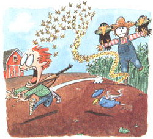

LAST LAUGH
Benign oasis for some, a nightmare for others.
I do not have a green thumb. My mother had a green thumb. My sister has one (an English variant, since she lives near the Forest of Dean) and my wife does too. I do not envy these dear people, nor do I denigrate them. They do their thing, I do mine. I have a pink thumb, now somewhat gnarled. When I was a kid, I used it for hitching rides and shooting Smokies. When I used it for gardening, it was usually under duress.
I was born in Vermont, but my first five years-1918 to 1923-were spent in a meager sugar plantation town called Reserve, on the east bank of the Mississippi River between New Orleans and Baton Rouge. My most vivid memories of Reserve are of snake-infested swamps and sugar fields and mud boards that were supposed to be sidewalks. My closest pal was a sturdy boy named Eldon Theard. He lived down the street-if you could call it a street. Almost every day he came over to my house and we played in the yard. The yard had a rather scruffy garden maintained by my mother, who majored in botany at the University of Vermont and tried to apply her vast knowledge to rural Louisiana. She was an intellectual green thumber.
In a far corner of the garden was a sandbox. Eldon and I messed around in that box for hours. Late one morning, we had a fierce fight. I can't recall why-maybe I threw more than the acceptable amount of sand in his face. At any rate, he chased me into the garden and bit me in the stomach. It requires firm resolve and agility for a fouryear-old to bite another four-year-old in the stomach, but he managed. Drew blood. Then he chased me up to the house where I slammed the backdoor in his face. He was fast, too.
It was scary, believe me. Ever since, I have thought of gardens-those benign oases for most people-as fairly dangerous places. Places where you go to get bitten in the stomach.
When I was five, my father quit his job. My father never got fired; he just got fed up and quit. So we headed north in a Hupmobile, north to Bushwillie, Vermont, a lovely 200-acre farm six miles from Rutland. It was at Bushwillie that my thumb was truly tried and found wanting.
My mother had a sizable vegetable garden, which was across the road, not far from a big red barn. By the time I was eight, it was my job to weed it. Forced labor. I got paid five cents an hour, which was a good wage in those days. And there was plenty to weed: potatoes, sweet corn, tomatoes, string beans, peas, squash, the usual. My mother loved the corn, especially the golden bantam corn. In the summertime I made about 75 cents a week weeding those plants, and I know that I did not weed them well.
It was also my job to fend off the crows. We had droves of these foul-mouthed, menacing birds. They sat in trees that bordered the garden, plotting vile maneuvers. They swooped down on the garden and carried away provender. I threw stones at them. This, of course, was ridiculous, so I built a scarecrow and stuck it in the garden between rows of potatoes. They perched on the rickety shoulders of the scarecrow and laughed at me. They were hysterical; so was I. Then I tried something different.
The big red barn had a hayloft with a sliding door that looked out on the scene. I armed myself with a book and a .22 caliber single-shot rifle and assumed a prone position behind that door. I waited and I read. The book was usually Two Little Savages by Ernest Thompson Seton, a masterpiece. Whenever I spotted a stationary crow I took careful aim, fired-and missed.
OK, you try to hit a crow with a single-shot .22 from 200 feet distant. There was one consolation: the sound of the shot scattered the target and his loathsome buddies for a few minutes. But I never did defeat them. I suspect they ate more golden bantam than my mother did.
As I look back, I see myself as the Bushwillie groundskeeper. Our front lawn was beautiful, with three majestic maple trees all in a row and a view of Pico Peak. There was a slight knoll on the way up to the main entrance, and that knoll was the habitat of many yellow jackets, also known, in extremis, as Vespidae Vespula vulgaris. What a cute name! Not all yellow jackets make their home underground, but these did, and they emerged from small holes in the daytime and buzzed around and routinely minded their own business. But they bothered visitors, and I was instructed in how to get rid of them. I was to pour boiling water down the holes, a kind of medieval stratagem, it seems to me now.
I poured boiling water down the holes. This did not disable the yellow jackets. Instead, it upset them. They roared out of the ground shouting, "We're mad as hell and we're not going to take it anymore," and they attacked me. They stung me in the back of the neck, which hurt just as much as being bitten in the stomach. I did not appreciate this, just as they did not appreciate boiling water. So I stopped. I told my father it wasn't worth it-not at five cents an hour.
Gardens have caused me more than a little anxiety ever since.
|
|
 |
|